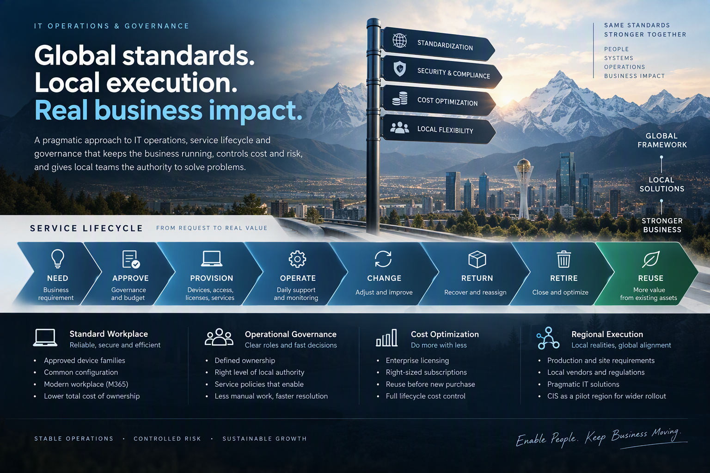

Central guardrails
One enterprise foundation.
Common security baseline, architecture principles, approved technologies, lifecycle requirements, auditability and strategic contracts.
A pragmatic operating model that keeps enterprise governance strong, gives local teams room to solve business problems and controls technology through its complete lifecycle.

Global IT needs common security, architecture, technology and cost controls. Local operations need enough authority to restore service, support production and respond to business reality.
The objective was not decentralization. It was a governed operating model in which central guardrails remain strong while low-risk operational decisions are handled at the level closest to the business.
The model separates enterprise-wide controls from decisions that depend on site conditions, local suppliers, production priorities, statutory requirements and immediate operational impact.
Common security baseline, architecture principles, approved technologies, lifecycle requirements, auditability and strategic contracts.
Low-risk operational actions can be resolved locally within defined controls, with visible ownership and escalation when risk increases.
Global platform ownership and local business knowledge are connected through explicit roles, service boundaries and decision paths.
Devices, access, licenses and services create value only when the full lifecycle is governed. Changes, returns, retirement and reuse are operational disciplines, not administrative afterthoughts.
Connect the request to a real business, workplace, site or production need.
Validate budget, security, architecture, ownership and the appropriate service level.
Prepare devices, access, licenses and services using repeatable standards.
Modify services through controlled changes with local impact assessment.
Return assets, remove access and reassign services when roles or needs change.
Remove obsolete assets, subscriptions and residual operational risk.
Reuse suitable assets and capacity before creating another purchase.
Approved device families and common configurations reduce variation and make deployment, support and replacement more predictable.
License cost is managed through enterprise agreements, right-sized subscriptions and timely removal of unused services.
Enterprise patterns remain intact while local IT works with site needs, production constraints, local vendors and regulatory dependencies.
Resilience combines reliable infrastructure, recoverable services, clear ownership, readiness for change and practical local recovery capability.
A ticket can restore a user or service. Governance makes the underlying decision, ownership, priority and history visible so the same problem does not remain trapped in repeated manual work.
Provide sufficient business, technical and scheduling context before execution.
Validate dependencies across users, production, networks, legacy systems and local support.
Align communication, readiness, ownership, fallback options and post-change support.
The model connects workplace standardization, lifecycle governance, local authority, cost discipline and operational readiness into one practical operating system.
Regional operations become a controlled environment for validating improvements before wider adoption, without weakening enterprise accountability.
Strong governance does not require every operational action to travel through the same central queue. It requires clear standards, explicit decision rights, accountable ownership and reliable evidence that the model works.
Assess service ownership, workplace standardization, lifecycle controls, operational bottlenecks, licensing, resilience and the balance between global governance and local execution.